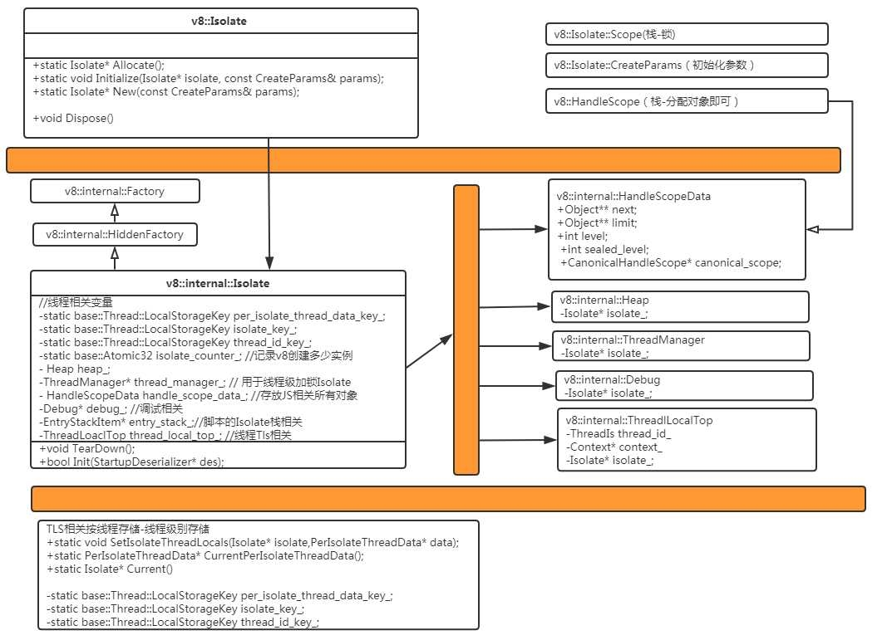

一个简单的使用v8接口例子流程： V8_Helloword
1.初始化v8相关资源
- v8::V8::InitializeICUDefaultLocation //ICU库是一个支持国际化，本地语言化的软件库
- v8::V8::InitializeExternalStartupData //加载 natives_blob 和 snapshot_blob。可以加载当前目录，也可以手动指定目录，或者是直接内存加载。
- v8::platform::NewDefaultPlatform //平台相关底层基础支持初始化。比较重要的就是:
- 依赖的任务线程模型
- 还有一些dump收集的
- 内存分配：OS::Allocate
- v8::V8::InitializePlatform
- static v8::Platform* platform_; //储存平台相关全局类
- v8::base::SetPrintStackTrace //开启栈跟踪
- trace v8::tracing::TracingCategoryObserver
- v8::V8::Initialize
- 各种环境初始化 InitializeOncePerProcess // lazy 单例
- Isolate::InitializeOncePerProcess //Isolate对应的 tlsley初始化
- static base::Thread::LocalStorageKey per_isolate_thread_data_key_;
- static base::Thread::LocalStorageKey isolate_key_;
- static base::Thread::LocalStorageKey thread_id_key_;
- sampler::Sampler::SetUp() //采集器 用于后续的执行分析
- CpuFeatures::Probe(false） //跟踪目标CPU支持的，特殊指令集合，在需要的时候替换生成的指令代码
- ElementsAccessor::InitializeOncePerProcess
- static ElementsAccessor** elements_accessors_; //管理各种类型元素的统一访问接口
- Bootstrapper::InitializeOncePerProcess //(Extension) The Boostrapper is the public interface for creating a JavaScript global context
- CallDescriptors::InitializeOncePerProcess() //CallInterfaceDescriptor 有很多，看起来是寄存器相关？，后面需要时再看。
- wasm::WasmEngine::InitializeOncePerProcess() //WASMcode 执行相关
2.solate相关
2.1 Isolate 的初始化创建详细过程
一个Isolate对应了一个V8的实例，拥有完整的堆栈和Heap。
一个Isolate是一份独立的V8 runtime，包括Heap管理器，垃圾回收器。
在一个时间段内，有且只有一个线程能使用此Isolate。不过多个线程可以同时使用多个Isolate。(2.2和2.3会介绍这个点)
单独的Isolate是不足以运行脚本的，我们在此需要一个全局变量。Context就是提供全局变量的工具。它在所处在的Isolate管理的Heap中创建一个对象，并以此为全局变量构建出一个完整的执行环境，供脚本使用。因此对于一个Isolate不仅可以用于多个Context，而且可以在这些Context之间共享对象。

v8::Isolate
- v8::internal::Isolate
- v8::internal::ThreadManager
- v8::internal::HandleScopeData
- v8.internal.Heap
- Logger* logger_;
- Debug* debug_;
- std::unique_ptr<TracingCpuProfilerImpl> tracing_cpu_profiler_;
- v8.internal.Isolate.PerIsolateThreadData
v8::Isolate 初始化
Isolate* v8::Isolate::New(const Isolate::CreateParams& params)
Isolate* Allocate();
void Initialize(Isolate* isolate, const CreateParams& params)
v8::internal::Isolate
bool Init(StartupDeserializer* des);
2.1.1 初始化
> v8.dll!v8::internal::ThreadManager::ThreadManager() 行 248 C++
v8.dll!v8::internal::Isolate::Isolate() 行 2532 C++
v8.dll!v8::Isolate::New(const v8::Isolate::CreateParams & params={...}) 行 8552 C++
v8_hello_world.exe!main(int argc, char * * argv=0x000000000053f470) 行 24 C++
v8_hello_world.exe!invoke_main() 行 79 C++
v8_hello_world.exe!__scrt_common_main_seh() 行 283 C++
v8_hello_world.exe!__scrt_common_main() 行 326 C++
v8_hello_world.exe!mainCRTStartup() 行 17 C++
kernel32.dll!00000000773c59cd() 未知
ntdll.dll!000000007762383d() 未知
Isolate 创建时，用一个静态变量来记录v8创建了多少个实例

ThreadManager 用于Isolate多线程被调用的管理类

2.1.2 HandleScopeData 存放js相关所有对象

2.1.3 加载本地文件 SetEmbeddedBlob （快照机制）

2.2 一个线程如何可以支持多个Isolate交替运行
这里就需要类似于压栈和出栈的机制。
来保存和还原Isolate 运行以来的数据，这里主要是 TLS相关和v8.internal.Isolate.PerIsolateThreadData 相关
v8::internal::Isolate::EntryStackItem 实现栈的逻辑

内部实现原理关键代码如下： 一般式结合以下2个逻辑现
v8.internal.Isolate.Enter

v8.internal.Isolate.Exit

2.3 如何保证多线程安全Isolate的运行
v8是支持多线程的，但是v8 isolate一次只能在一个线程中使用。这里的使用包括，访问v8handle或者持有指向v8内部对象的对象指针。这需要调用者的保证，可以按需选择是否需要加锁。出了可以使用任何其他的同步机制外，还必须使用v8::locker 和 v8::Unlocker来保证v8被切换到单线程执行。
下面详细分析一下，V8内部是如何加锁限制，一个ISolate在同一时刻只在一个线程执行。同时1个ISolate又可以在互斥的时间段，在不同的线程中执行。
1）首先考虑，仅仅在一个线程中执行时，v8.Isolate.Scope 会在指定的作用域内，调用v8.internal.Isolate.Enter和v8.internal.Isolate .Exit。然后其内部依靠，线程级别的全局记录+ 链表EntryStackItem 结构记录调用栈 (Isolte,PerIsolateThreadData)。实现了，当线程正在执行某个Isolate时，把之前的信息压栈保护。作用域失效时，恢复为原始Isolate环境。详细见2.2的内容。
2）如果一个线程正在使用Isolate，其他线程如果也调用该Isolate, 需要遵守V8的规范，v8::locker 和 v8::Unlocker。
其内部本质上是一个类似临界区实现，同一线程可以重复进入，内部实际用的是不支持递归调用的读写锁(AcquireSRWLockExclusive).
如代码所示：用读写锁的独占模式，而且读写锁的独占模式，不支持递归调用。不允许同一个线程多次Acquire，会直接卡主不会报错。

3）所以实际流程如下，当某个线程需要加锁前，isolate根据其内部成员thread_manager中管理了当前正在被哪个线程独占。
如果发现是已经被lock,就会跳过，否则同一个线程中重复调用不支持递归的锁，就会直接卡死。
reinterpret_cast<i::Isolate*>(isolate)
然后调用 thread_manager 进行相应的lock
if (!isolate_->thread_manager()->IsLockedByCurrentThread()) {
isolate_->thread_manager()->Lock();
has_lock_ = true;
...
}
bool IsLockedByCurrentThread() {
return mutex_owner_.Equals(ThreadId::Current());
}
void ThreadManager::Lock() {
mutex_.Lock();
mutex_owner_ = ThreadId::Current();
DCHECK(IsLockedByCurrentThread());
}
void ThreadManager::Unlock() {
mutex_owner_ = ThreadId::Invalid();
mutex_.Unlock();
}
//v8\include\v8.h 中
/**
* Multiple threads in V8 are allowed, but only one thread at a time is allowed
* to use any given V8 isolate, see the comments in the Isolate class. The
* definition of 'using a V8 isolate' includes accessing handles or holding onto
* object pointers obtained from V8 handles while in the particular V8 isolate.
* It is up to the user of V8 to ensure, perhaps with locking, that this
* constraint is not violated. In addition to any other synchronization
* mechanism that may be used, the v8::Locker and v8::Unlocker classes must be
* used to signal thread switches to V8.
*
* v8::Locker is a scoped lock object. While it's active, i.e. between its
* construction and destruction, the current thread is allowed to use the locked
* isolate. V8 guarantees that an isolate can be locked by at most one thread at
* any time. In other words, the scope of a v8::Locker is a critical section.
*
* Sample usage:
* \code
* ...
* {
* v8::Locker locker(isolate);
* v8::Isolate::Scope isolate_scope(isolate);
* ...
* // Code using V8 and isolate goes here.
* ...
* } // Destructor called here
* \endcode
*
* If you wish to stop using V8 in a thread A you can do this either by
* destroying the v8::Locker object as above or by constructing a v8::Unlocker
* object:
*
* \code
* {
* isolate->Exit();
* v8::Unlocker unlocker(isolate);
* ...
* // Code not using V8 goes here while V8 can run in another thread.
* ...
* } // Destructor called here.
* isolate->Enter();
* \endcode
*
* The Unlocker object is intended for use in a long-running callback from V8,
* where you want to release the V8 lock for other threads to use.
*
* The v8::Locker is a recursive lock, i.e. you can lock more than once in a
* given thread. This can be useful if you have code that can be called either
* from code that holds the lock or from code that does not. The Unlocker is
* not recursive so you can not have several Unlockers on the stack at once, and
* you can not use an Unlocker in a thread that is not inside a Locker's scope.
*
* An unlocker will unlock several lockers if it has to and reinstate the
* correct depth of locking on its destruction, e.g.:
*
* \code
* // V8 not locked.
* {
* v8::Locker locker(isolate);
* Isolate::Scope isolate_scope(isolate);
* // V8 locked.
* {
* v8::Locker another_locker(isolate);
* // V8 still locked (2 levels).
* {
* isolate->Exit();
* v8::Unlocker unlocker(isolate);
* // V8 not locked.
* }
* isolate->Enter();
* // V8 locked again (2 levels).
* }
* // V8 still locked (1 level).
* }
* // V8 Now no longer locked.
* \endcode
*/
3 Isolate如何进行简单的编译和执行
首先Isloate 实例创建完毕后。在考虑了多线程安全执行的因数后。现在可以单线程中。
V8的实例是如何开始初始化环境，然后进行编译个执行脚本代码。
正如前面2.2和2.3所示，首先是要进入Isolate的执行环境
3.1 v8 执行环境准备
v8::Isolate::Scope 用于Isolate在栈上的相关信息保存。Isolate可以被多线程执行，以及单个线程可以在多个Isolate中切换交替运行。
{
v8::Isolate::Scope isolate_scope(isolate);
...
}
Context创建用于js执行的上下文，拥有其内置函数和对象，可以类似压栈和出栈在不痛的context中切换；v8::HandleScope用于统一存储存储栈上申请的handle，在其释放后，gc会统一释放其持有的对象。如果要申请非栈生命周期使用的，需要使用与local对应的Persistent。
// Create a stack-allocated handle scope.
v8::HandleScope handle_scope(isolate);// Create a new context.
v8::Local<v8::Context> context = v8::Context::New(isolate);
// Enter the context for compiling and running the hello world script.
v8::Context::Scope context_scope(context);
然后就是编译和执行，后面会继续详细分析编译和执行的流程（重点关注缓存相关逻辑）。
{
// Create a string containing the JavaScript source code.
v8::Local<v8::String> source =
v8::String::NewFromUtf8(isolate, "'Hello' + ', World!'",
v8::NewStringType::kNormal)
.ToLocalChecked();
// Compile the source code.
v8::Local<v8::Script> script =
v8::Script::Compile(context, source).ToLocalChecked();
// Run the script to get the result.
v8::Local<v8::Value> result = script->Run(context).ToLocalChecked();
// Convert the result to an UTF8 string and print it.
v8::String::Utf8Value utf8(isolate, result);
printf("%s\n", *utf8);
}